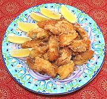

|
Bombay Duck, Fried #2India - Bombil Rawa | ||||
| Makes: Effort: Sched: DoAhead: |
4 app *** 2-1/4 hrs Yes |
Do not be fooled - this "duck" does not waddle or go "quack". This recipe is for whole "fresh" fish. For the dried form, see Bombay Duck, Fried #1. This hot appetizer is accompanied with raw onion rings, lemon or lime wedges, and beer. | |||
|
1-1/2 ----- 8 3/4 1 1/4 1/2 ----- c T ----- ar ----- |
# --- cl in t t t --- c T --- --- |
Bombay Ducks (1) -- Marinade Garlic Ginger Root Chili Powder (2) Turmeric Salt -- Coating Rice Flour Semolina (3) ---------- Oil (4) -- Serve with Red Onion Rinds Lemon Wedges |
Prep - (1-3/4 hrs - 25 min prep + 45 min fish)
|